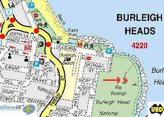
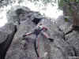

| Burleigh Heads National Park Climbing Guide |
By Lee Cujes
Last updated 7 November 2011
|
|

|
|
Don't get too excited! This is a diminutive, cracked basalt wall below the lookout in Burleigh Heads National Park. It has a couple of good hand cracks, chimneys and a few ar�tes. Not bad for an afternoon of mini-climbing. Also a good option for getting beginners ready for a weekend at Frog.
Access
Note that as at January 2006, climbing has been officially "banned" by the area's ranger. They are permitted to issue spot fines of $225 each. You have been warned!
Park on Goodwin Terrace off the Gold Coast Highway (see map).
Follow the walking track (take the first branch to the R) up
the hill to the second lookout (on the very top of the hill)
(8 mins). Climb over fence and descend easy chimney on south
(R) side of lookout to base of wall.
Note: The majority of the routes described below were first
climbed in the 60s and 70s, therefore the first ascent information
shown below is the first recorded ascents only. If
you can clarify these, contact me and I'll make the appropriate
corrections.
|
 |
|
Above: Map of location. The red
arrow points toward the crag |
Jungle Wall
Climbs listed from L to R facing the rock, and stars indicate relative quality.
- Dr Living Stone 8m 13
10 metres left of Shere Kahn. The crack below the obvious roof
problem. Balancy crux to start up the crack, then directly over roof.
Natural belay, then an easy scramble out right. A good warm up.
FFA Matt Boulton, Ray Trace 18/3/04
- Shere Kahn 9m 23
I'm sure in Yosemite this would be grade 16. Starts R of corner
at the offwidth crack. Climb the 4m offwidth (#5 camalot)
to ledge, then walk off L. The headwall finish passing the
very dodgy bolt (placed by an earlier party) is uncompleted.
Using the fig tree is not allowed.
Lee Cujes 21/06/02
- Anaconda 15m 17
2m R. Very wide crack (#5 camalot) to protruding roof. Step
R under roof into enclave. Two finishes are possible. The
L one (roof/chimney) is 21 and very funky, the R one (chimney/crack)
is 14.
Lee Cujes, Samantha Cujes 21/06/02
- ** Jungle Boogie 15m 18
Just R again. Face route up pillar on gear. Up past break
(small gear) to small sickle-crack (sling), then to ledge.
Finish as for Anaconda. A great lead.
Lee Cujes, Samantha Cujes 11/06/02
- ** Jungle Gym 13m 14
1m R. Wide shaft with lovely handcrack running up the middle.
A good beginner lead. Take Anaconda's R-hand finish.
Samantha Cujes, Craig Phillips 21/06/02
- Clear Felling 13m 23+
This is the pillar between the routes. Top rope only. No bolts
please due to proximity to other routes.
FTRA Terry Svingen 28/09/2003
- Hunter Gatherer 13m 12
2m R. Twin cracks/chimney. Not a bad chimney, but I'm not
sure about the protection.
FSA Lee Cujes 21/06/02
- ** Fireflies 15m 22
2m R is a detached leaning pillar with bolts. Use stick or
bridge tree to clip first of three FH's, but start directly
from ground. Blast directly up the pillar past two FH's to
break (small SLCD). Clip the final FH, then crank up and R
to top out.
- Narrow Is The Way 15m 14
Start in the cave 1m R behind Fireflies pillar. Well protected
climbing up a tight and fully enclosed chimney. At the top,
exit L through the gap and finish up Anaconda's RHF.
FTRA Matt Boulton 26/10/02. FSA Lee Cujes 14/12/02.
- ** Call Of The Wild 15m 18
The most obvious route here. 2m R of pillar and marked by
some weird metal spikes sticking out down low. Attractive,
sinuous crack up corner to small roof, then ramble out.
Neil Monteith 1993
- Laughing Hyena 15m 19
Slightly contrived, but great fun up the arete between COTW
and Amazon, always staying clear of the two cracks. A couple
of thin, cruxy moves to jug. Continue up arete to ledge on
a variety of interesting holds. Scramble up to top.
FTRA Terry Svingen 08/02/2003
FFA Taib 2011
- * Amazon 15m 15
1m R. Another sinuous crack, similar to the last one. If you
pike off right, subtract a few grades.
Neil Monteith 1993
- You Tarzan 15m 16
The leaning, low-angle pillar, and wide shaft behind. The
delicate crux is on the slabby pillar (no pro), so don't fall
off! The first ascent was soloed onsight with a rope trailed
for the second.
FSA Lee Cujes, Craig Phillips 21/06/02
- Rock Of Offense 14m 12
Enter the cave L of Me Jane then up the tight chimney and
under the offensive chockstone. Up Tarzan's short shaft, to
belay off Me Jane's ledge. Scramble out L.
Matt Boulton, Joel Collins 08/02/03
- Me Jane 7m 13
3m R. A shaft with a big tree growing against the rock. Bridge
the shaft and climb the tree, with a harder move at the top.
Belay on ledge, but scramble out L (roped).
Samantha Cujes, Lee Cujes 11/06/02
- Pygmy 6m 23
1.5m R. Contrived, but a bit of fun. The pillar with a FH.
The committing crux above the bolt must be climbed direct!
Scramble down R.
- Tribal Dance 6m 13
1m R. The last decent corner crack on the cliff. Scramble
down R.
Craig Phillips, Samantha Cujes 21/06/02
- Jungle Book 6m 9
13m R. 2m left of Cheetah. Easy twin crack/chimney all the
way. Good pro. A nice beginners lead to practise hand jamming
and easy bridging.
FSA Terry Svingen 08/02/03
- Cheetah 6m 17
2m R. Fist-width corner crack to break. Stay off the R crack/ledge
from half height. Scramble down R to tree and rap off.
Terry Svingen 26/01/03
|
 |
|
Above: Lee Cujes hearing the Call Of The Wild (18) |
The first ascent information above shows the first recorded ascents. If you can clarify these, let me know.

|
{kind=link}